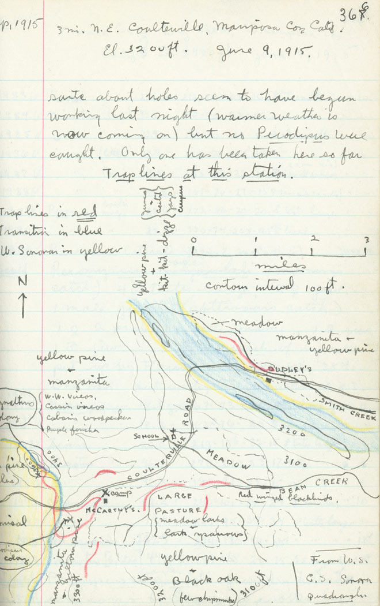
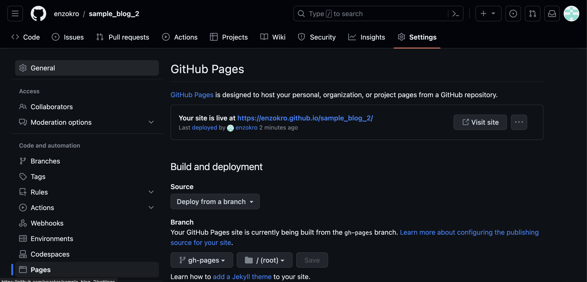

Blogging with Quarto and nbdev
This notebook creates a blog using
nbdevand the Quarto publishing platform.
Intro
nbdev is a powerful tool inspired by two paradigms in the coding world:
- Literate Programming
- Exploratory Programming
Next we briefly cover these ideas and why their combination is so powerful.
Literate Programming
In Literate Programming, notes and tests are woven directly into a project’s source code. This is very different from documentation that exists separately in some other set of files. Code, documentation, and tests are all first-class citizens in Literate Programming. Each piece is crucial to the overall approach and makes for better, more readable code.
In nbdev a Jupyter Notebook is the single source of truth for code, documentation, and tests. Instead of independently managing three sets of files, everything is defined and happens in the Notebook. If the Notebook runs, then you know your code will run.
So, why is this helpful? Here’s a fun analogy: your Notebooks are the modern, computerized version of field journals. Below are some inspirational samples from this Wired article about what science, at its best, can be:



Let’s focus on the last example: the field notes about a lynx. Notice that we’re not only reading long descriptions of what a Lynx is supposed to look like. And we’re not looking at a series of pictures with no context either. We’re getting the best of both worlds: short and relevant descriptions right next to clear, working examples. Field notes bridge the gap between the written, theoretical and the actual, practical.
Notebooks can do for code what the field notes above did for the lynx. We can interactively show people the data, describe what’s being done, and make sure that the results are correct. We can even show our mistakes and struggles along the way. This strong loop between what you’re doing (code), describing what you’re doing (documentation), and making sure it’s correct (tests) is a great way to approach research. More than that, it is an incredibly powerful way to communicate and share ideas.
Exploratory Programming
Exploratory Programming is an open-ended approach for tackling new problems and unknown domains. It’s very helpful at the start of a project when scope or requirements are still being finalized.
Notebooks are both dynamic and interactive which makes them perfect for Exploratory Programming. They make the barrier for trying new things extremely low. And they’re downright fun!
The video embedded below is an incredible talk by Bret Victor about the power of Exploratory Programming, with stunning examples throughout:
Combining Literate and Exploratory Programming
nbdev’s workflow combines these two ideas. It’s a great approach for interactively learning and exploring how something works. Iterations are fast and cheap so it’s easy to follow any hit of curiosity. We can also develop and test code in a much more dynamic way than usual. And if anything breaks, we can always restart the Notebook and try again.
These ideas can be measured on the fly. For example at the start of a project, while figuring out the problem space, we could lean Exploratory. Then, as the idea matures, we pivot to Literate in order to refine and crystallize our approach.
Next: creating and publishing a blog post with nbdev.
Turning Notebooks into Blog Posts
First, a high-level summary of how we will publish and create a blog with nbdev.
High-Level Steps
1. Create a new nbdev project.
2. Build a publishable blog inside the project.
3. Build and publish the blog to Github Pages.
nbdev uses a framework called Quarto to publish blogs. Quarto is designed for technical or scientific articles and posts. In a way it’s a blogging platform for Literate Programming, where a series of code and comments take the reader on a journey.

Creating a new nbdev project
nbdev works on top of a Git repo, so the first step is creating a new, empty repository. There is a handy Github link that takes us straight to the page for creating new repos.
Note: We need a completely empty repo. Don’t include a
.gitignoreorREADME.md.
In this example the empty repo is called sample_blog, but feel free to call it anything you’d like. We’re not tied to this name either. We can always create new repos with different, better names.
Clone the empty new repo to your computer. Make sure to change the github link below so it points to your repo instead.
# clone the repo to your computer
git clone https://github.com/enzokro/sample_blog.git # <-- ! link with your repo hereNow we can move into this repo and work nbdev’s initialization magic. Run the nbdev_new command to start. You will be prompted for some general info, like a short description about the project.
# move into the new repo and initialize the nbdev project
cd sample_blog/
nbdev_newNote: All of the options and configs for the project are in the
settings.inifile.nbdevlooks in this file when it needs any information for its commands.
After nbdev_new finishes, you will have a brand new nbdev project!
Run a git status command to see everything that was added. Then we commit and push these changes to Github.
# add, commit, and push the files created by nbdev
git add .
git commit -m'Initial nbdev project creation'
git pushAs mentioned earlier, nbdev publishes notebooks using Quarto. Let’s take a look at how to turn this project into a full Quarto blog.
Adding Quarto to the Mix
Start by activating the virtual environment:
# activate the environment
mamba activate llm_basenbdev comes with a way to install Quarto by running the nbdev_install_quarto command. Note that the command will ask for admin privileges.
# install quarto
nbdev_install_quartoYou may need to refresh the terminal before it can find the new quarto binary. To be safe, open up a new terminal and re-activate the environment. Now the command below will check if Quarto was installed right.
# shows us where quarto was installed
which quarto Turn an nbdev project into a Quarto blog
In an nbdev project the Notebooks usually live inside the nbs/ folder. These Notebooks eventually become a project’s code source, tests, and documentation.
For Quarto to instead publish Notebooks as blog posts, we need to add a few files and folders to the nbs/ folder.
Below is the structure for a nbs/ folder that’s been primed for its blog post.
Initial Structure for Quarto Blog:
sample_blog
└───nbs/
│ │ _quarto.yml
│ │ index.ipynb
│ └───blog/
│ │ index.qmd
│ └───posts/
│ └───2023-09-27-Blog-Intro/
│ │ index.ipynbThe main change is adding a blog/ folder inside of the nbs/ directory. Inside, at its top level, we place an index.qmd file that tells Quarto about our blog. Here’s example index.qmd file that titles our blog and describes how posts will be listed:
---
title: Example Blog
subtitle: Publishing with Quarto and nbdev
listing:
sort: "date desc"
contents: "posts"
sort-ui: false
filter-ui: false
categories: true
feed: true
page-layout: full
---To stay better organized, each post will get its in folder. An index.ipynb Notebook inside each folder will have the post’s actual content. We can also put photos, videos, or any other assets to enhance a post into this folder.
As a working example, we are going a bit meta and using this Notebook itself as index.ipynb in the folder called 2023-09-27-Blog-Intro/.
In other words this Notebook will also be our first blog post.
Hosting the Blog on Github Pages
The site will be hosted on Github’s Pages platform. This is a built-in feature offered by Github and we can leverage it by changing a few settings. The screenshot below shows the to configure the repo so it can be published as a blog.

Specifically, we need to set the Deploy from a branch option under the Build and deployment section. Then, we pick the gh-pages branch as the branch to deploy from. gh-pages is a special branch where nbdev parses our Notebooks into a proper Quarto website.
Next, run the quarto publish command to build and publish the blog.
# publish the blog on github pages
quarto publishAnd there we go! We created and published our first blog post using nbdev. Click here for a live link to this Notebook as a blog post.
Conclusion
This Notebook covered how to create and publish a blog. We used nbdev to build the blog and Quarto to publish it. We also showed how the mix of Literate and Exploratory Programming is a powerful approach to both research and thinking in general.